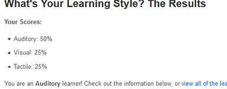
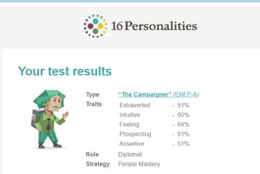
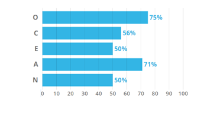

Content to Follow...


Adam Mutimer
Basic Profile Stuff here :)
Channon Harper (s3871491)
About Me
I am 33 years old born 1987 in Bacchus Marsh Vic now currently residing in Greenmount QLD, I am married and a father of 1 dad of 2, I am also a proud member of ‘The Flying Mongooses’. My hobbies include fishing, camping, making things with my hands, as well as messing around with programs and software to see what can be done with them. My interests in IT is all to do with the programming side of things as well as the vulnerabilities that some systems have, also gaming everyone loves gaming. My experience is all self-taught if there is anything, I don’t understand I typically just sit and learn it by any means necessary. I have previously made RPG, side scrollers, and text-based games, I also have knowledge in the use of all main software be it office 365, Eclipse or Atom to name a few. After completing this course, I will have my first qualification in this field and will also be doing some Cybersecurity Certifications.
Personal Profile
I believe the results from my 3 tests are fairly accurate to how I perceive myself within reason some of the results I find to be most useful are as follows. Introverted I do not believe the results here were accurate I do consider myself an introvert however in a dynamic where I previously know someone or get to know someone I have no troubles starting a conversation or joining in one. Judging I am always concerned someone may take something I say the wrong way and knowing this about me will hopefully assure them its just my personality everyone is intitled to an opinion I want to assure them of that. Intuitive I usually just go straight at something thinking I am doing the right thing but in the same sense if I am not and can be logically explained quickly, I accept my faults. This information may benefit the group as from it they can determine a role suitable to my personality. I do not believe it replaces knowing someone because the results are limited, they can also be contradicted in certain circumstances as depending on the situation your personality may change.



Daniel Scarfe
Basic Profile Stuff here :)
Jorge Esteban (s3874914)
About Me
My name is Jorge Esteban, Student number s3874914 I'm 35 years old and a member of the “Fighting Mongooses” I was born in the city of Tijuana Mexico. I'm not very sure about my heritage, but all my family has been born in Mexico. most people in Mexico are “mestizos” which means we are a mix of indigenous and European decent, mostly Spanish, I speak Spanish as my mother tongue and English as my second language. one very interesting fact about me is that I don’t like spicy food, something very rare is you’re are from Mexico. as for a hobby I love to play football (soccer), I play at least once a week and it also helps me to keep in shape. I play midfield or left wing. Another aspect about me is that I'm married, and I have a 2-year-old daughter. I moved to Australia back in 2012. Since then I have had many jobs. I tried to continue my career in Australia as an environmental technician. but I realize that I was not enjoying that career anymore. since 2014 I started to work in supermarkets and liquor stores, which I found very fun to work in. Since then I moved up getting more responsibilities until I was offered a job in Hamilton island as a liquor store manager back in 2016 and since then I've been living in Tropical Hamilton island.
About my interest in IT, I’ve always been very interested in this field. Always curious about the technology it uses and how it works. I came to realize during this pandemic how important is to be communicated and the importance of IT in the business sector. Thanks to IT a lot of business were able to keep working otherwise they would have gone bankrupt. this really got my interest in wanting to know more about IT and the services it provides.
Personal Profile
The result of the Mayers-Brigss result: Campaigner
I found this result very accurate. I'm the type of person that can be introverted and extroverted at the same level. I'm the kind of person that likes to meet new people and make friends. Also, I like to maintain those bonds with the other person. at work I'm always looking after other people and looking to after them before me. when I'm working with other people, I'm always traying got create a good working environment with my coworkers. So, everybody can work at their best. that’s not always the case as we all know things in real life can be a lot more complicated.
This Big Five assessment measures your scores on five major dimensions of personality: Openness, Conscientiousness, Extraversion, Agreeableness, and Neuroticism (sometimes abbreviated OCEAN). Check out your scores on each of the five dimensions in the graph below, then read on to discover what each score means.
Madeleine Dupree
Basic Profile Stuff here :)
Samuel Mennen
Basic Profile Stuff here :)